1.7 Covalent Bonding - Structure
Covalent bonding, carbon allotropes, polarity and molecular shape
1.7 Covalent Bonding - Structure
本页对应 1.7 Covalent Bonding - Structure.pdf.pdf，整理 evidence of covalent bonding、dot-and-cross diagrams、carbon allotropes、electronegativity、bond polarity、VSEPR theory 以及 molecular shapes and bond angles。专业词汇保留 English，重点训练 electron pairs → shape → polarity → property 的分析方法。
Learning objectives
学完本页后，你应该能够：
- explain covalent bonding as electrostatic attraction between nuclei and a shared pair of electrons；
- draw dot-and-cross / Lewis-style diagrams for single、double、triple and coordinate bonds；
- compare diamond、graphite and graphene using their structures and properties；
- use electronegativity to explain bond polarity and molecular polarity；
- apply VSEPR theory to predict molecular shapes and bond angles；
- explain how lone pairs and multiple bonds change bond angles。
1.7.1 Evidence of covalent bonding
Formation of a covalent bond
A covalent bond forms when two non-metal atoms share a pair of electrons。The shared electrons are attracted to both positive nuclei，so the electrostatic attraction holds the atoms together。
For hydrogen：
\[ \ce{H. + .H -> H:H} \]
Each hydrogen contributes one electron，and the shared pair gives each atom a stable first shell。
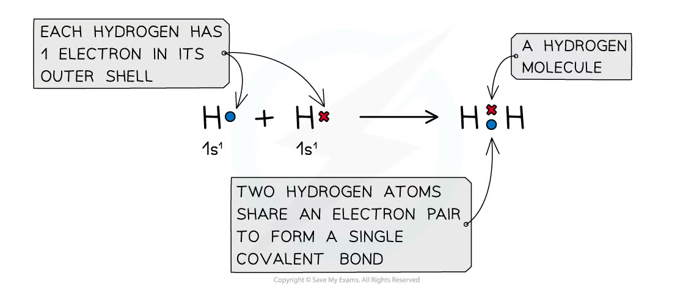
The electron density is greatest between the nuclei in a covalent bond：
Single、double and triple bonds
- A single covalent bond contains one shared pair of electrons。
- A double covalent bond contains two shared pairs。
- A triple covalent bond contains three shared pairs。
As bond order increases，the bond generally becomes shorter and stronger because more electron density is concentrated between the nuclei。
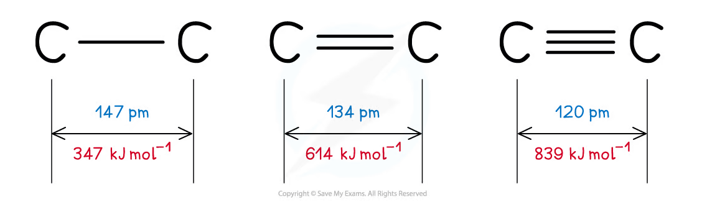
For carbon-carbon bonds：
| Bond | Length | Bond enthalpy |
|---|---|---|
C-C |
147 pm |
347 kJ mol⁻¹ |
C=C |
134 pm |
614 kJ mol⁻¹ |
C≡C |
120 pm |
839 kJ mol⁻¹ |
1.7.2 Covalent bonding
Dot-and-cross diagrams
Use dots and crosses to show which atom supplied each electron in a shared pair。A correct diagram should show：
- the outer-shell electrons of each atom；
- the shared electron pair(s) between the atoms；
- any non-bonding lone pairs；
- the final molecule with each atom achieving a full outer shell where applicable。
Examples of simple covalent molecules include H₂、O₂、N₂ and Cl₂：
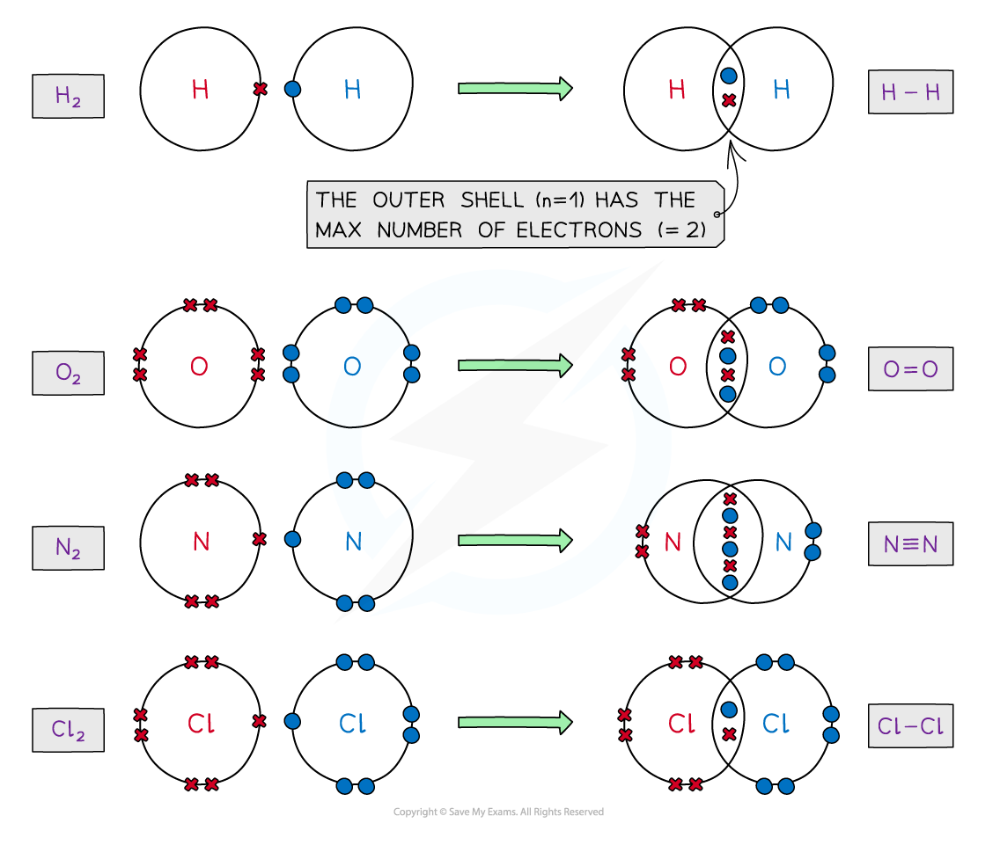
For O₂，the two oxygen atoms share two pairs of electrons，forming a double bond：
\[ \ce{O=O} \]
For N₂，three pairs are shared，forming a triple bond：
\[ \ce{N#N} \]
Covalent compounds and electron deficiency
Most main-group atoms tend to achieve a full outer shell，but some compounds are electron deficient。For example，boron in BCl₃ has only six electrons around it after forming three single bonds。
Some atoms in Period 3 and beyond can have more than eight outer-shell electrons because additional orbitals are available。The octet rule is therefore a useful guide，not an absolute rule for every molecule。
Coordinate / dative covalent bonds
A coordinate bond is a covalent bond in which both electrons in the shared pair are donated by the same atom。It is often shown by an arrow from the electron-pair donor to the electron-pair acceptor。
In formation of ammonium：
\[ \ce{NH3 + H+ -> NH4+} \]
The nitrogen lone pair is donated to the hydrogen ion，forming a coordinate bond. Once formed，the coordinate bond is equivalent to the other N-H covalent bonds。
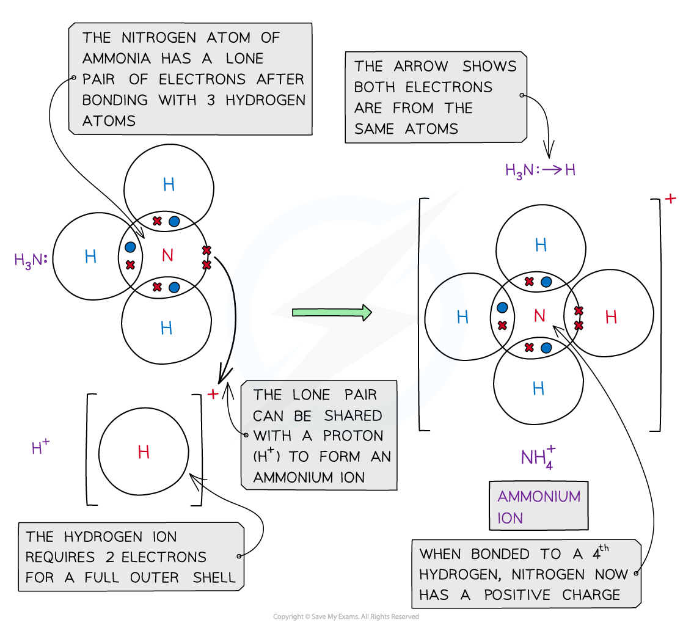
Aluminium chloride can also form coordinate bonds when two AlCl₃ units combine to form Al₂Cl₆：
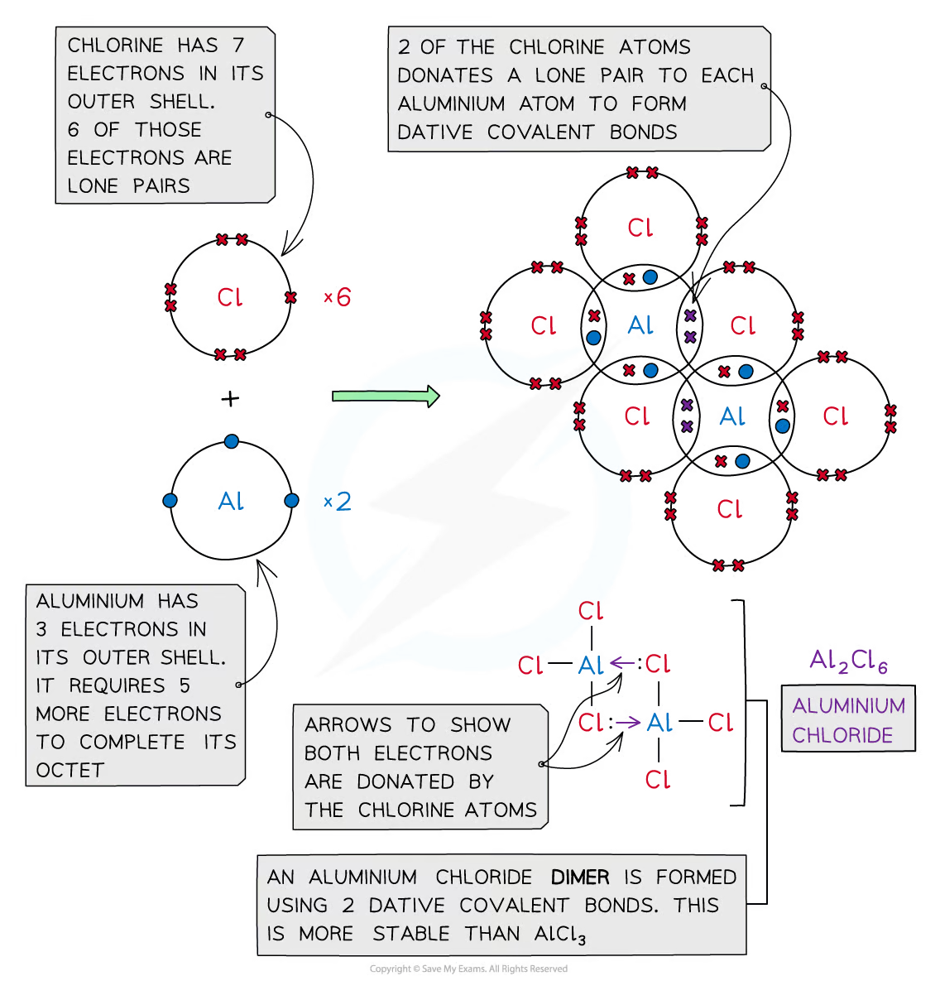
1.7.3 Carbon allotropes
An allotrope is a different structural form of the same element in the same physical state。Carbon allotropes have different properties because their atoms are bonded and arranged differently。
Diamond
Each carbon atom in diamond forms four strong covalent bonds to four other carbon atoms in a three-dimensional giant covalent lattice。
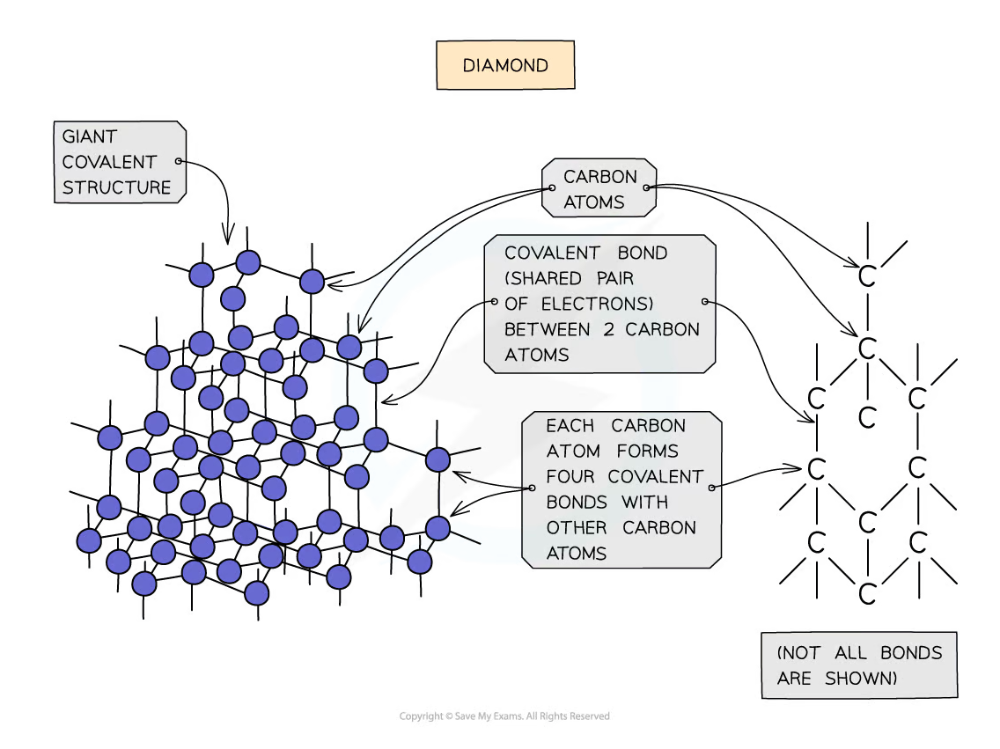
Properties：
- very high melting point because many strong covalent bonds must be broken；
- extremely hard because the strong lattice resists deformation；
- does not conduct electricity because all four outer electrons are involved in covalent bonds；
- useful for cutting tools and abrasives。
Graphite
Each carbon atom in graphite forms three covalent bonds to other carbon atoms in a planar hexagonal layer。The fourth outer electron is delocalised within the layer。
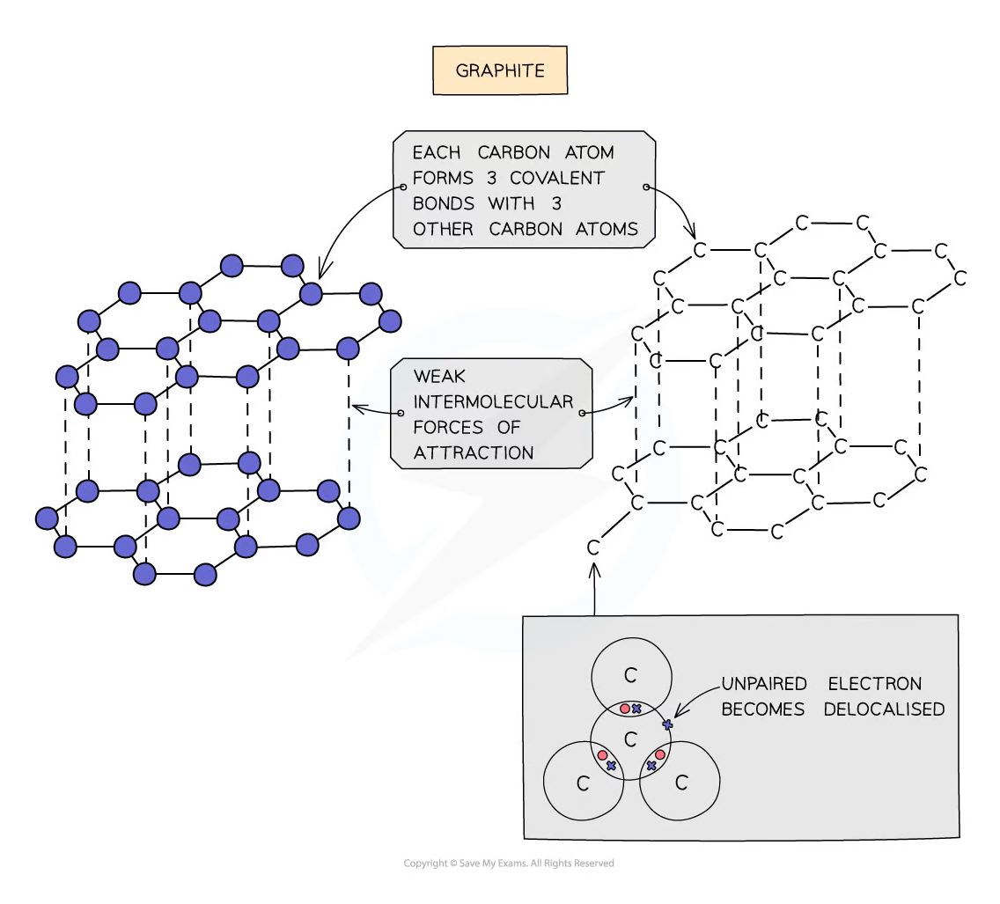
Properties：
- conducts electricity because each carbon contributes one delocalised electron；
- has a high melting point because strong covalent bonds exist within each layer；
- is soft and slippery because weak intermolecular forces between layers allow layers to slide；
- used in electrodes and as a lubricant。
Graphene
Graphene is a single layer of graphite. Each carbon atom forms three strong covalent bonds in a hexagonal sheet and contributes one delocalised electron。
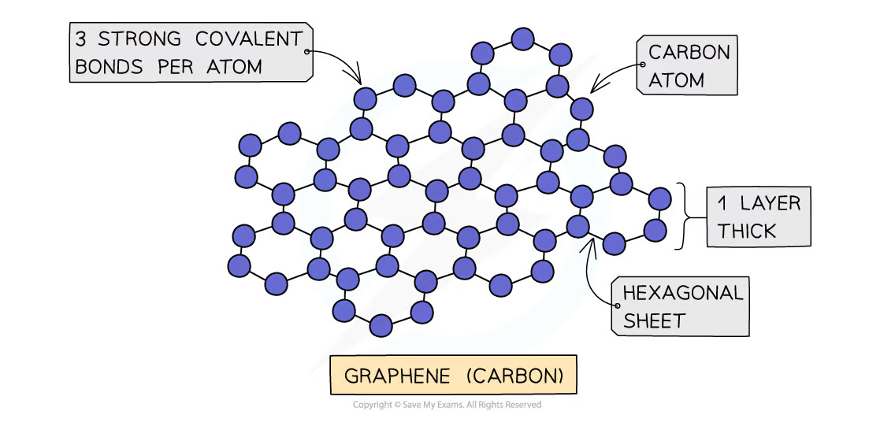
Graphene is strong、light、flexible and an excellent conductor of electricity and heat。Its one-atom thickness gives it a very large surface-area-to-mass ratio。
Allotrope comparison
| Allotrope | Structure | Electrical conductivity | Key property |
|---|---|---|---|
| Diamond | 3D giant covalent，4 bonds per carbon | No | Very hard |
| Graphite | Layers，3 bonds per carbon | Yes，within layers | Soft and slippery |
| Graphene | One graphite layer | Yes | Strong，light and flexible |
1.7.4 Electronegativity
Definition
Electronegativity is the ability of an atom to attract the bonding pair of electrons in a covalent bond towards itself。
Fluorine is the most electronegative element. Electronegativity generally increases across a period and decreases down a group because nuclear attraction、distance and shielding change。
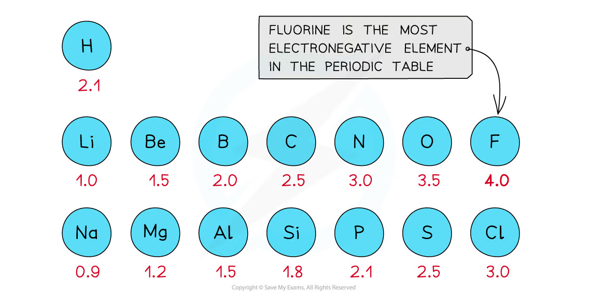
Bond polarity
If two bonded atoms have different electronegativities，the shared electron pair is attracted more strongly towards the more electronegative atom。The bond has a permanent dipole：
\[ \ce{H^{\delta+}-Cl^{\delta-}} \]
The dipole arrow points towards the more electronegative atom，with a crossed tail at the positive end。
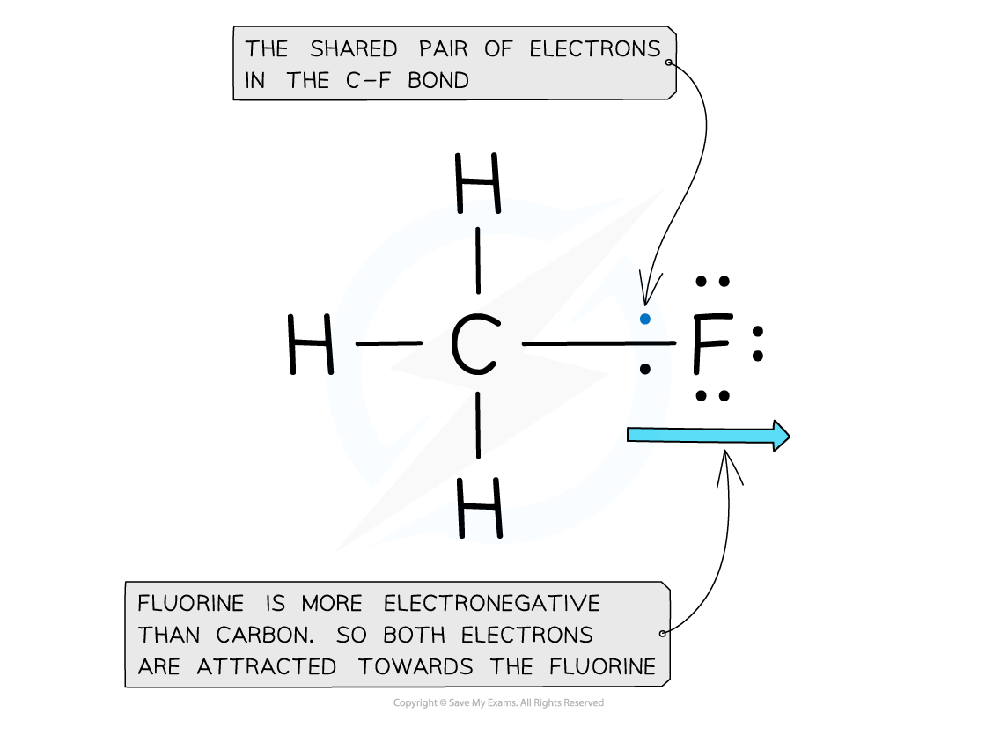
The greater the electronegativity difference，the more polar the covalent bond tends to be。A very large difference may give a bond with substantial ionic character。
Polar molecules
A molecule is polar if it has an overall permanent dipole。To decide whether a molecule is polar：
- identify the polarity of each bond；
- determine the molecular shape；
- add the bond dipoles as vectors；
- decide whether they cancel。
For example，the two identical bond dipoles in CO₂ point in opposite directions and cancel，so CO₂ is non-polar. In bent H₂O，the O-H dipoles do not cancel，so water is polar。
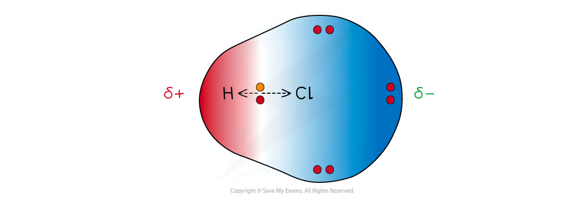
Intermolecular forces
Intermolecular forces act between molecules and are much weaker than covalent bonds within a molecule：
- London dispersion forces occur between all particles and increase with number of electrons and surface area；
- permanent dipole-dipole attractions occur between polar molecules；
- hydrogen bonding is a particularly strong attraction when hydrogen is bonded to
N、OorFand attracted to a lone pair on another molecule。
When a simple molecular substance melts or boils，intermolecular forces are overcome；the covalent bonds inside the molecules remain intact。
1.7.5 VSEPR theory
Core idea
VSEPR means Valence Shell Electron Pair Repulsion。Electron pairs around a central atom repel one another and arrange themselves as far apart as possible to minimise repulsion。
The repulsion order is：
\[ \text{lone pair-lone pair} > \text{lone pair-bonding pair} > \text{bonding pair-bonding pair} \]
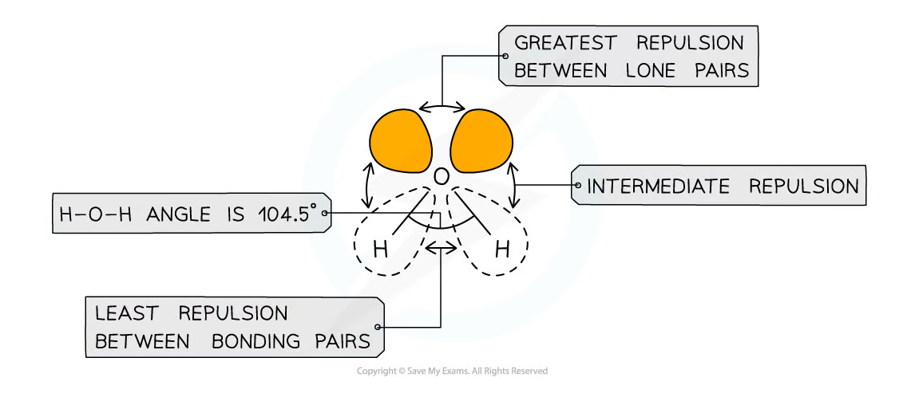
Lone pairs occupy more space than bonding pairs because their electron density is concentrated closer to the central atom。They therefore compress the bond angles between bonding pairs。
Electron pairs and multiple bonds
For VSEPR，a single、double or triple bond counts as one region of electron density around the central atom，although a multiple bond may repel slightly more strongly than a single bond。
Count：
- bonding pairs around the central atom；
- lone pairs on the central atom；
- electron regions，not individual electrons。
1.7.6 Predicting shapes and angles
Common molecular shapes
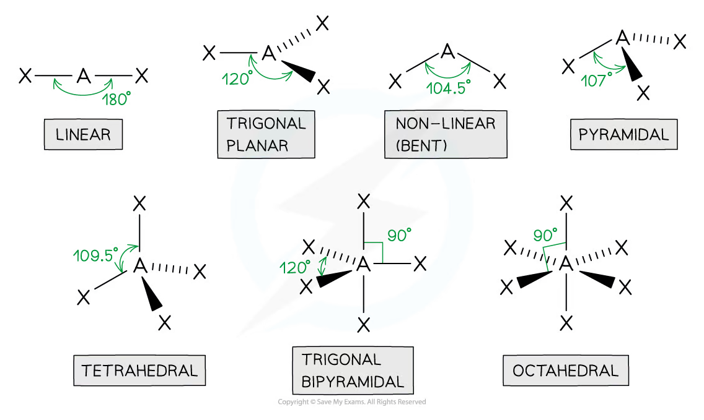
| Electron regions around central atom | Molecular shape | Example | Bond angle |
|---|---|---|---|
| 2 bonding pairs | Linear | BeCl₂ or CO₂ |
180° |
| 3 bonding pairs | Trigonal planar | BF₃ |
120° |
| 2 bonding pairs + 1 lone pair | Bent / non-linear | SO₂ |
slightly less than 120° |
| 4 bonding pairs | Tetrahedral | CH₄ |
109.5° |
| 3 bonding pairs + 1 lone pair | Trigonal pyramidal | NH₃ |
107° |
| 2 bonding pairs + 2 lone pairs | Bent / non-linear | H₂O |
104.5° |
| 5 bonding pairs | Trigonal bipyramidal | PCl₅ |
90° and 120° |
| 6 bonding pairs | Octahedral | SF₆ |
90° |
Examples of tetrahedral and pyramidal shapes：
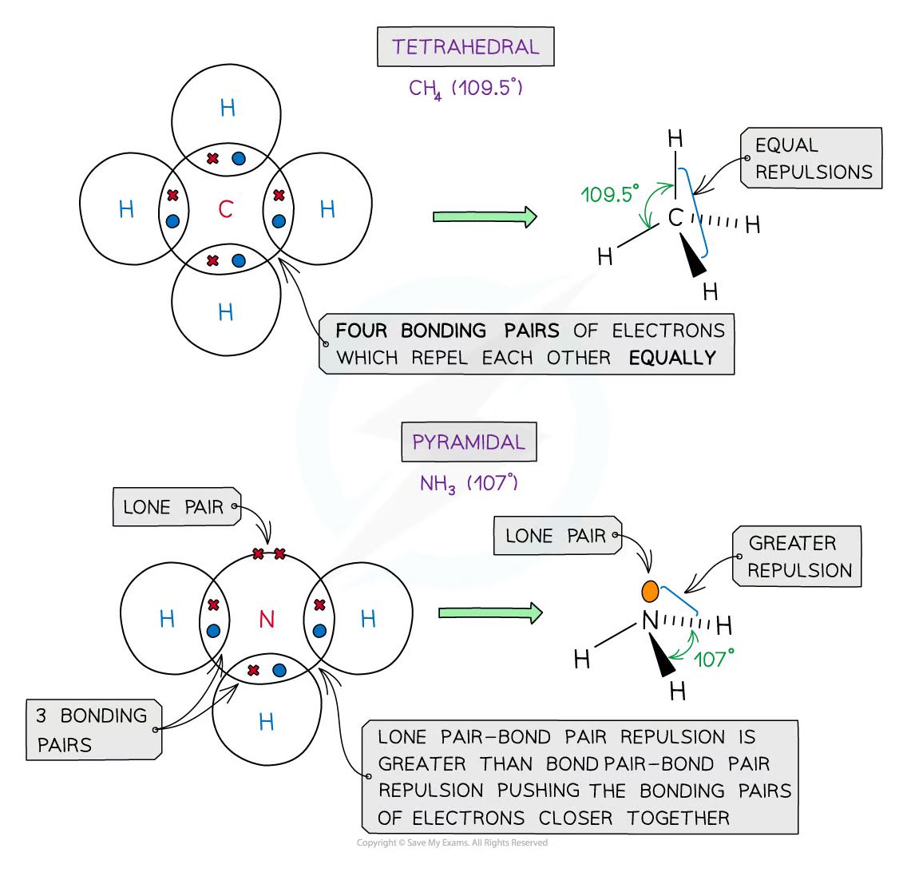
Examples of bent and octahedral shapes：
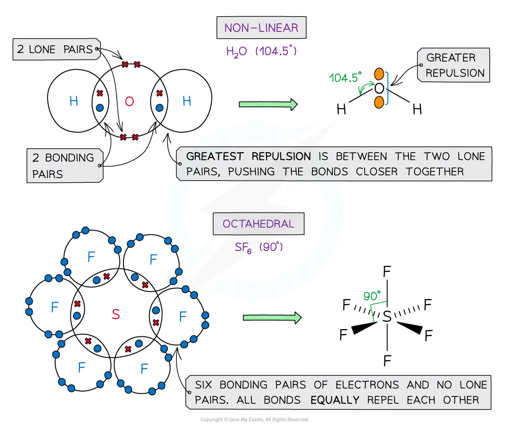
Trigonal bipyramidal molecules contain three equatorial bonds at 120° and two axial bonds at 90° to the equatorial plane：
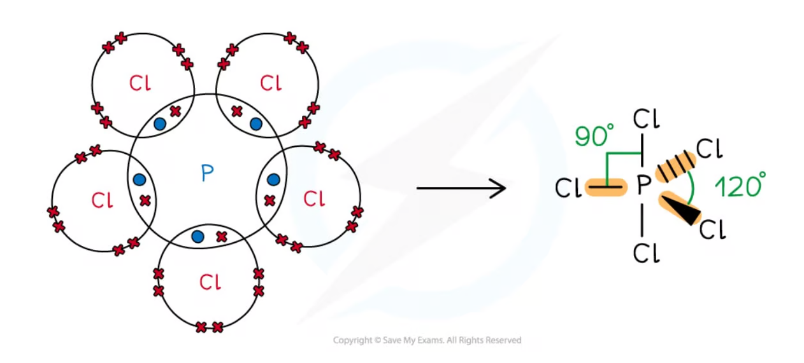
Lone-pair effects
For CH₄，there are four bonding pairs and no lone pairs，so the ideal tetrahedral angle is 109.5°。
For NH₃，one lone pair repels the three bonding pairs more strongly，reducing the H-N-H angle to approximately 107°。
For H₂O，two lone pairs create even greater repulsion，reducing the H-O-H angle to 104.5°。
The correct reasoning is not “the lone pair pushes the bonds down” alone；state that lone-pair repulsion is stronger than bonding-pair repulsion，so the bonding pairs are forced closer together。
Structure-property exam method
For any covalent structure question：
- draw or identify the Lewis / dot-and-cross structure；
- count electron regions around the central atom；
- include lone pairs in the electron-pair arrangement；
- use VSEPR to name the molecular shape；
- state the bond angle and explain any compression；
- use symmetry to decide whether bond dipoles cancel。
Example answer frame
NH₃ has four electron pairs around nitrogen，three bonding pairs and one lone pair. The electron pairs adopt a tetrahedral arrangement，but the molecular shape is trigonal pyramidal because the lone pair is not shown as an atom. Lone-pair/bonding-pair repulsion is stronger than bonding-pair/bonding-pair repulsion，so the H-N-H angle is reduced from 109.5° to about 107°。
Common mistakes and exam checklist
Source note
本页面对应：Note per Chapter/Note per Chapter/1.7 Covalent Bonding - Structure.pdf.pdf。页面中的 dot-and-cross diagrams、carbon allotrope structures、electronegativity、polar bond、bond length、VSEPR and molecular-shape figures 均从该 PDF 的 embedded images 独立提取，并转换为 RGB white-background PNG 后保存到 assets/notes/covalent-structure/。